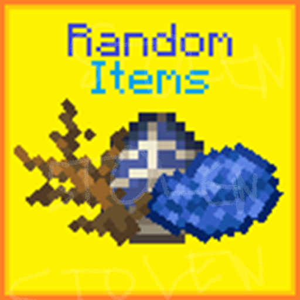
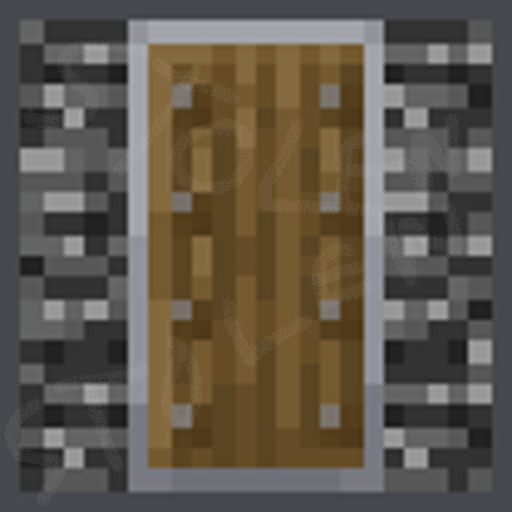
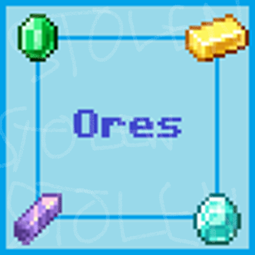
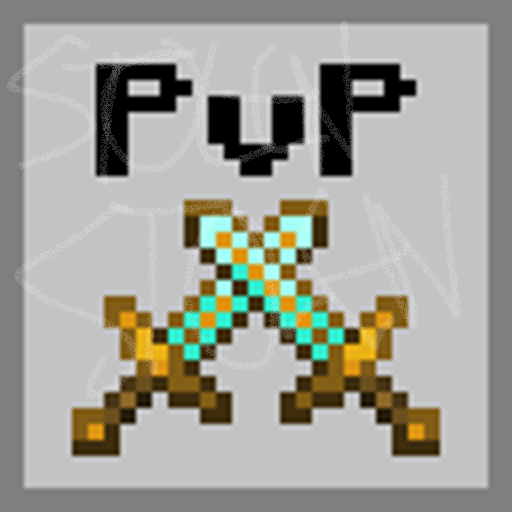
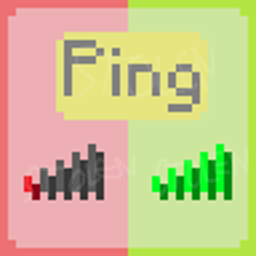
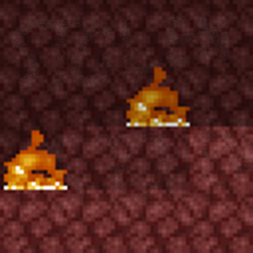

These are NOT the final icons. Don't steal them or download them off this site. Please ask me (@nerdking332 on Discord if I'm in a mutual server or this Discord server if not) if you would like an icon, with a screenshot of the specific icon you chose from the website. I will give you the original file.
Icons are completely free, and you have permission to edit or use them after you ask for them. The reason you can't use the icons that are here is so many people don't end up with the same icon. Once you have the original version, feel free to share it with others or use it in any way you'd like.
My goal: to help people replace their AI-generated mod icons with human-made icons that look better and follow Modrinth's content rules.





